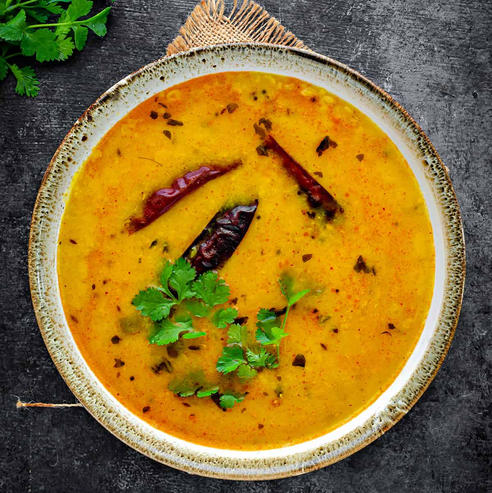

Yellow Dal

Dal (lental) Bhat (rice) is a staple of Nepali cuisine. It is cheap, healthy and easy to make.
Ingredients
- 1x cup of Red Split Lentals
- 1 tsp Salt
- 1/4 tsp Tumeric Powder
Steps
- Wash and soak lentil for atleast 30mins, preferably 5 hours or overnight
- Strain soaked lentils then add to a pressure cookers with tumeric and 1.5 cups of water.
- Cook on medium heat for 3 whistles.
Notes
When cooking with a pressure cooker, cooking time is often messured in the amount of times that the pressure cooker releases steam (whistles)
Garnish with chopped coriander.
I thought cumin seeds, dried chilli, onion, ginger, garlic also went into this recipe Shree.....
Credit Shree